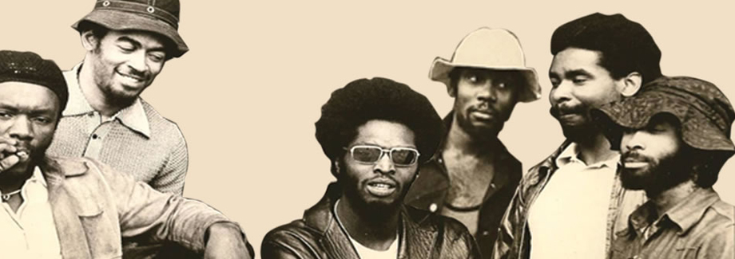

Welcome
Cymande the British-based Funk music pioneers, emerged as innovators of the funk music scene during the early-1970s.
Influenced by their Caribbean heritage, the band combined Reggae and Rastafarian rhythms with funk, soul, R&B, jazz and rock to create a new and exciting sound which captivated audiences throughout the United Kingdom and the United States as well as Europe and the continent of Africa. The Music of Cymande conveyed a true spirit of togetherness reflected in the band's emblem which incorporated a dove with the head of a Rastaman symbolizing peace and love.
